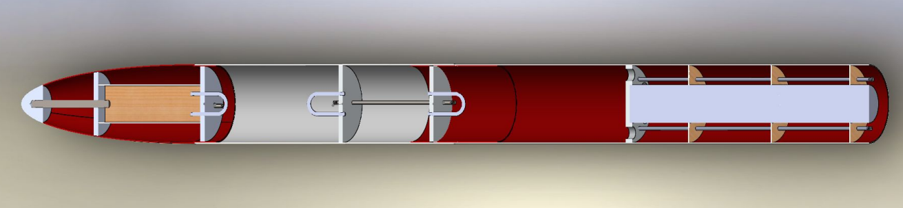

Solids Rocket Development
While serving Alabama Rocketry Association as Chief Engineer of the solid propulsion team, Deimos, I worked on two additional projects to assist the team. The first was developing a rocket simulation to facilitate the design process, the second was establishing a base model for the team to iterate and improve on.
Modeling and Simulation

Early in the design process, our team found that it would be vital to have a model of the rocket that required a less solidified configuration of our rocket than the software we were using for final designs - OpenRocket. There were a few key things we wanted from the model. An approximation of apogee assuming a completely vertical flight, max flight velocity, and an ability to see how changes in key design parameters affect these values.
The first approach was deriving a basic force equation that included air drag. I implemented the equations in Excel and they worked reasonably well - providing velocities and altitude at burnout, which could be used to calculate apogee. However, this model didn’t meet two of the requirements we wanted, but rather provided a reference for future models.
The second approach was significantly more robust. I wrote it in MATLAB in a way that allowed the inclusion of what the previous model lacked. Air density was written as a function of altitude. Rocket mass was no longer averaged - mass flow rate through the nozzle was accounted for. Thrust was now a table derived from manufacturer’s thrust graphs, which meant different motor grains now had a noticeable effect on the flight curve.
The part that ended up being of most use was that this simulation could be iterated over key design variables. The main parameter analyzed was ‘[Rocket] Mass without Motor’ - we were reusing a rocket shell from a previous year mainly to reduce club expenditures, but this had a secondary benefit of greatly narrowing down free design variables. The images below depict the effect of rocket mass on maximum aerodynamic pressure, mach number, and altitude of flights for various motors. For our PDR downselect, we used these graphs to choose motor M795-0 for our PDR Downselect. The motor choice ended up being scrapped - the T/W ratio was way too low at take off and would have made the sounding rocket an unguided weapon on the launch site due to weather cocking.
Rocket Configuration
This is mainly a 'lessons learned' from my stint leading a team. The development of a basic rocket configuration that was to be improved throughout the year was a plan to remedy a few of the team member onboarding issues I had experienced as a member new to ARA. The main things I noticed was that one: ‘building a rocket’ is a very nebulous concept, especially for those unfamiliar with hobby rockets and two: most people entering project teams, specifically college freshmen, likely don't know where their interests lie and comitting a semester or two to a certain subsystem seemed to stifle learning opportunities.
In attempt to fix these issues, I planned to provide an almost complete rocket design. This design would provide a reference to any changes we wanted to make to the system. Team members could hone in on different systems or components they wanted to improve and see those changes take shape if the team agreed. If a few members were interested in aerodynamic effects of the nosecone, they could provide analysis on a few different profiles and aspect ratios and the team would decide on if the design should be changed.
Largely, the effort was a failure. The participation system I had developed required a lot of buy-in and self-drive, which prevented the less engaged and committed members from really getting into the weeds. We also had to operate in the newly online-only environment that COVID-19 granted us, which, while not the sole source of issues, was a contributing factor to the team participation seen. Lastly, and I think this is most important factor, being presented a completed rocket on your first day of 'Rocket Club' is a great way to have all the wind taken out of your sail. If the rocket is already designed, what am I doing here? This took an embarassingly long time to realize
There's a number of thing's I'd do differently if I had the chance. Firstly, I'd discuss a list of project requirements with the project manager and club president. Have those determined by the start of the Fall semester. Split the requirements up by subsystem and assign those as deliverables to the subsystem leads. Allow people to either choose or be assigned to which subsystem they'd like to participate in rather than which component to work on. This would still allow a degree of flexibility if so desired, but within a limited scope so that knowledge isn't lost everytime someone leaves a component. There's a million other things that I would do better with a 'next time', but I'd start with those
